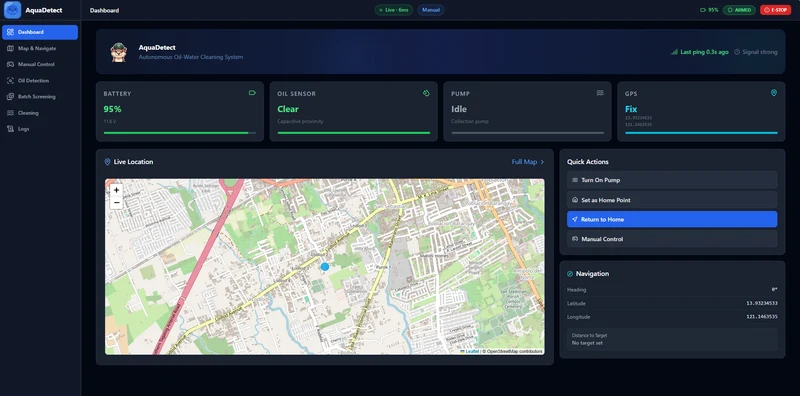
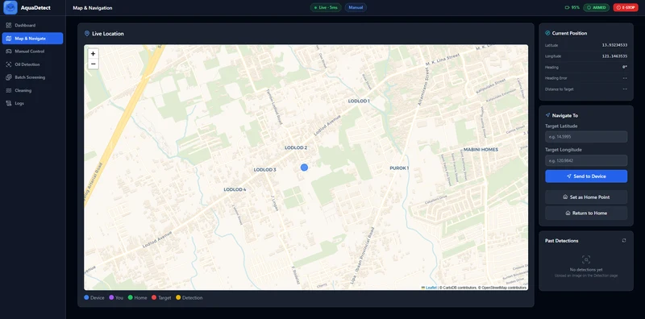
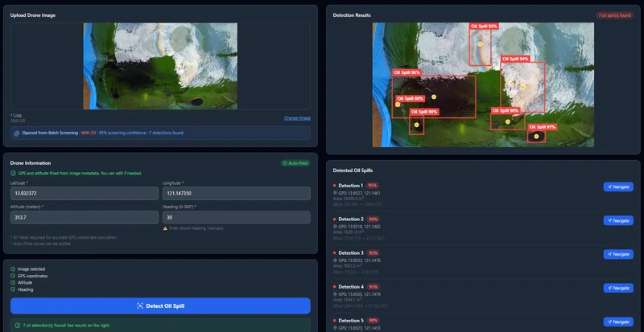
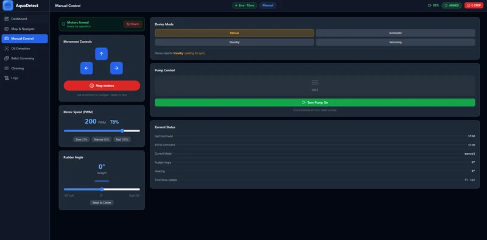
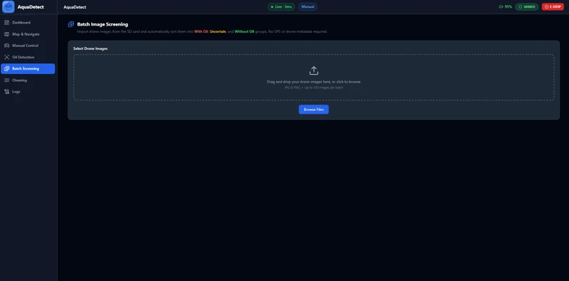
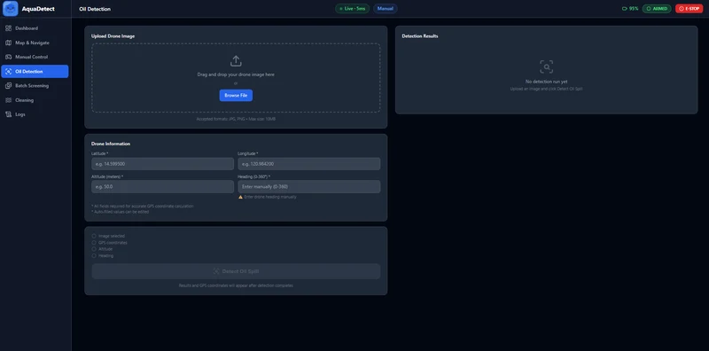
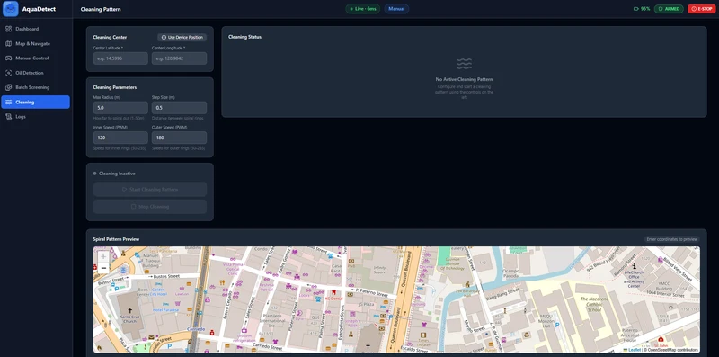
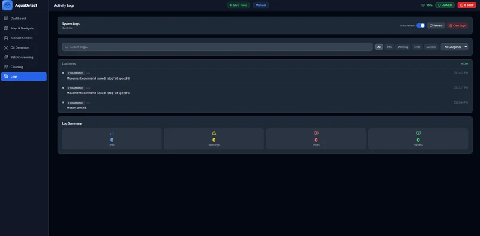

DETECTION & REVIEW
Image upload, batch-screening, and detection-result views organize the computer vision workflow. The example result shows bounding boxes and individual prediction confidence scores.
02 / THE SOFTWARE · TEAM THESIS
Make the data visible.
Bring the system into view.
Battery, oil-sensor, pump, location, and navigation information in one overview.

01Dashboard overview
02Map & navigation
03Detection results
04Manual control
05Batch screening
06Image analysis
07Cleaning patterns
08Activity logsScreenshots from the thesis application. Displayed readings and controls belong to those captures; this is a project walkthrough.
AquaDetect brings the software side of our thesis into one monitoring interface.
Our team built the dashboard with React, FastAPI, and Leaflet to visualize boat telemetry and oil-spill detection results. The supplied screens show how status, location, analysis, and controls are organized for the operator.
The computer vision work used YOLOv8, trained through six iterations, reaching a reported 73.48% mAP50 in the thesis evaluation.
Image upload, batch-screening, and detection-result views organize the computer vision workflow. The example result shows bounding boxes and individual prediction confidence scores.
Dashboard and map views bring position, navigation, and system-status information together, with target-coordinate and home-point controls visible in the interface.
Manual-control, cleaning-pattern, and activity-log screens present the operational side of the system, including controls, parameters, and command history.
Built as a team thesis. The 73.48% mAP50 figure is the reported model evaluation result; individual confidence scores in the screenshots describe separate predictions.